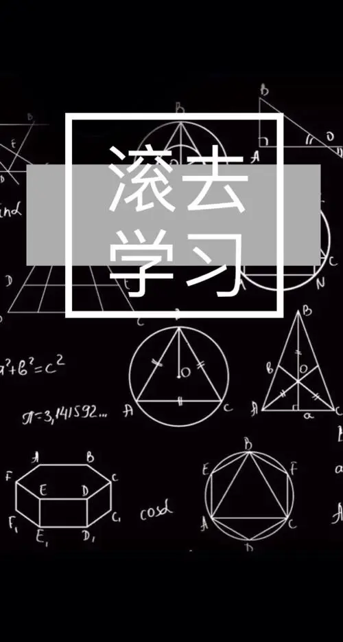

如何学好高等数学
学习这件事情，从来都是每个人有每个人的方法，每个人有适合于每个人的方式，仁者见仁、智者见者。但是万变不离其宗，总有一些客观的规律是任何人都无法违背的，任何人都要遵循的。笔者不才，今天就分享自己对于如何学好高等数学的一些粗鄙看法。其中有些道理，其实大家都懂，因此道理不在于懂，而在于脚踏实地的践行之！
1、必须要做题，必须要多做题，必须要经常做题！
重要的事情说三遍。笔者非常厌恶自命清高者、盲目鼓吹素质教育者不由分说的强烈抨击”数学做题论”，大唱国外的数学教育如何如何。笔者始终认为，数学只靠做题是不行的，但是学数学不做题肯定更不行！ 因此学习高数，必须要做多做题。尤其是在不定积分、隐函数求导、多元积分、常微分方程、求极限等一些需要大量习题来夯实基础的章节。 但是如果只是多刷题，势必就成了题海战术。何谓题海战术？？大量做题并不等于题海战术，一味的大量做题而从不总结从不梳理知识才是题海战术。因此笔者反对题海战术，但赞成多做题。前期，必定要多做题，因为不做题就会造成对知识根本无法熟悉。后期可稍微少做点题，注意留存并分析典型题。因为前期做那么多题，心里一定对某部分知识或者题型有一定的理解和清晰度，那么在后期就应该沉下心来，花上半天时间来梳理下知识、做下总结。或者把自己内心涌动的暗藏的那些好东西给记下来，毕竟好记性不如烂笔头。 另外，笔者强烈建议养成收藏母题的习惯。何谓母题？在笔者看来，有这么一种题，其中包含了我们常见的大多数解题技巧、或者代表了一类较有难度的常见题型、或者代表了某块知识的常见出题方向，这种题笔者就把他们称为母题。掌握了母题，就能保证在应试中取得不错的分数。当然了，要想具备辨识母题的能力，肯定还是离不开前期的多刷题。因为只有题做的多了，才能分辨出哪一类题才能作为母题而被收藏。因此母题的收藏不在于多，而在于精，而且还有具备一定的难度。所谓的难度是针对你自己的水平而言的，你觉得难那就是难，不要看大众的口味。
2、要善于做知识的梳理和小结
高等数学知识体系的细节繁多、尤其是各种定理、各种性质很多很多，且大多数都很抽象。因此在每次学完一块知识的时候，有效的梳理知识是很有必要的。 举个例子，比如在极限学习完毕。相信许多同学都做了很多求极限的题目。那么自己完全可以做一个专题，就是梳理下常见的求极限的方法有哪些？不要看不起这个梳理，因为后面还有多元函数求极限。如果此时不加梳理，那么到了多元函数求极限的时候，估计都把求极限的一般方法都忘的差不多了。而如果完成了梳理，那么势必在多元函数求极限时，内心会架构清晰，逻辑有序，并且会在做题时感觉到原来万变不离其宗，多元函数求极限大多数时候也是这几种方法啊。 再举个例子学习连续函数的时候，大家可以梳理连续函数都有哪些性质？必如有界性、单调性、周期性、奇偶性等，大家不必死记硬背，只要稍加梳理做到心中有数即可。如此还有连续函数的零点定理、介值定理、最值定理这些重要的定理也可以做个框架列出来。这些都能够帮助自己理清所学的内容。 再比如高等数学我们学习了那么多种积分、有一元函数的、多元函数的，那么大家可以仔细想想到底学了多少种具体的积分呢？每一种积分的异同点是什么、算法又是什么？大家完全可以做个表格或者写篇文章来个对比，这样既加深了印象又加深了理解。 总之，养成经常梳理知识的习惯非常有必要。那么什么时候需要梳理？？依然以自己为标准，在你觉得对一块知识模糊不清、或者脑袋里一团浆糊的时候，就该停下来梳理下、思考下了。也说明你督促自己进步的机会来了，请不要轻易的放弃这个机会！
3、加深对知识的本质理解，探本求源
这个问题笔者深有体会。因为直到今天，笔者还在感觉自己以前学习高等数学、微积分只学会了一半。为什么呢？就是因为好多东西都不求甚解，以为会做题了，就得过且过了。从而忽略了对知识的本质理解。 那么如何发现哪些知识应该探本求源，是自己需要深入本质理解的呢？很简单，仍旧是以自己为标准。只要是你觉得心中对某个知识点，总有一块说不清道不明的迷惑时候，那说明你就应该停下来，好好对这个知识进行探究了。首先应该搞明白，自己模棱两可的地方到底是什么，也就是搞清问题所在。然后就八仙过海、各显神通，利用各种渠道去解决这个问题，而解决问题的过程其实就是探本求源的过程。 举个例子，笔者在学习微分的时候，就觉得导数、微分傻傻分不清，有时候觉得他们很像，尤其是在计算上很像，有时候又觉得千差万别。于是笔者就查各种资料，看各种大神的解读。方才明白导数跟微分的本质区别，以及他们为什么长的这么像。心中疑惑不仅释然了，更加深了对微分的本质理解。 再比如在学习一致连续的时候，虽然教材上有证明，但是笔者还是感觉对闭区间上连续与一致连续为何等价模棱两可。因为教材上的证明并不能说明最本质的问题。于是笔者仔细思考，依然查阅资料，最后在有限覆盖定理这个角度理解了闭区间为什么等价，而开区间为何不可。从而也搞明白了，一致连续和连续到底有什么本质区别。 总之，加深知识的理解非常重要。对知识探本求源，虽然对做题目没有多大的帮助，但是却有助于我们对知识的融会贯通。更重要的是，让我们在探究的过程中，对学习产生兴趣，有一定的成就感！而且探本求源，是学习微积分、高等数学的最不可或缺的方法。如果想彻底理解高等数学中的知识，必须探本求源，求本质的、核心的理解。
4、循环回顾、车轮复习
高等数学知识体系庞大，很多学生都有学了后面的，忘了前面的那种感觉。笔者当年也有。科学发展观告诉我们，要发现问题，然后解决问题。因此笔者发现了这种问题，就充分发挥了自己的主观能动性，去寻求解决这个问题的办法。 笔者比较愚笨，采用的也是笨拙的方法。即循环回顾、车轮复习。顾名思义，就是在学习后面的知识的时候，抽出时间回顾前面的知识。注意，不是零散的回顾，而是有计划有系统的回顾。必如学习下册教材的时候，笔者开始计划每一周一章，将上册教材一次回顾一遍。在知识的复习上如此，在做题应试时也是如此。比如笔者有积累母题的习惯，因此笔者会每隔一段时间，就抽出一点时间，比如每天花个一小时，把母题本上的题目依次再做一遍，也顺便检查下自己的遗忘程度。 笔者并无天分，生性愚拙，因此采用的都是笨方法。但是有一点必须要说明的是，无论你采取哪种方法，首先你得有主动去解决问题的意愿。这么多年，笔者就亲身见过许多同学，不断的问着身边的人该如何学、该怎么学，但是仍旧没有付诸行动。总之一句话，如果你发现了自己的问题，那么按照发展观、按照你的积极心，你就应该思考如何解决这个问题，想到了办法就该去做去尝试，但是如果你只是一味的询问解决方法而几乎不去行动，那这无异于耍流氓和身心懒惰了。
